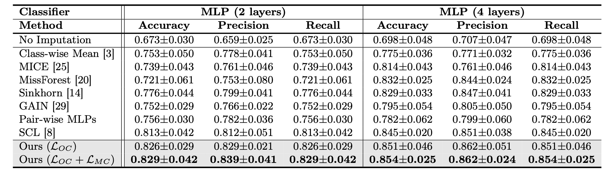
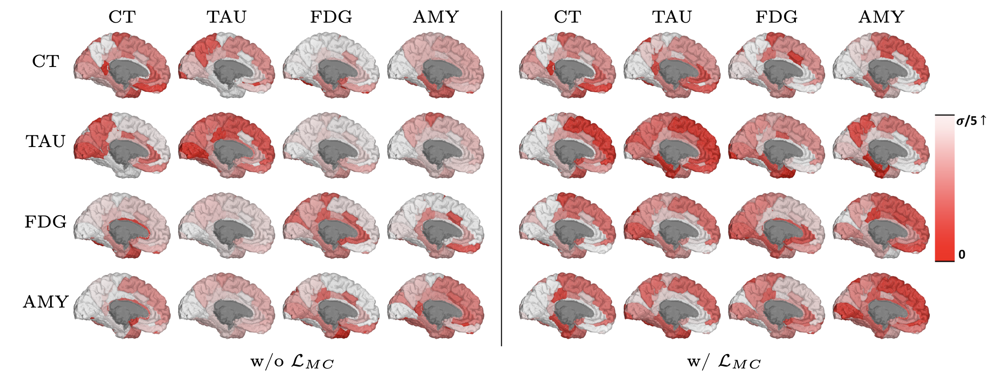

Figure: Comparison of supervised (left) and ordinal (right) contrastive learning: Both approaches contrast the set of all samples from the same class as positives against the negatives from the rest of the batch. While supervised contrastive learning repels each negative without differentiation on labels denoted as (a) ≈ (b) ≈ (c), ordinal contrastive learning assigns the penalizing strength based on the label distance.
Figure: Visualizations of embeddings under each loss by t-SNE. Each individual encoder is trained with three distinct losses including Cross-Entropy (left), Supervised Contrastive Loss LSC (center) and our Ordinal Contrastive Loss (right) along with domain adversarial loss. (a) and (b) correspond to training and testing data respectively. (Color: AD-stage labels, Shape: imaging scan types.)
Figure: p-values from group comparisons with Bonferroni correction at α=0.01: (a) before imputation, (b) after imputation from our model. Top: Resutant p-value maps on a brain surface (left hemisphere) in a negative log from CN and EMCI comparison with cortical thickness, and (b) shows higher sensitivity. Bottom: Number of significant ROIs. Number of common ROIs before-and-after imputation are in ().
Figure: p-values from group comparisons with Bonferroni correction at α=0.01: (a) before imputation, (b) after imputation from our model. Top: Resutant p-value maps on a brain surface (left hemisphere) in a negative log from CN and EMCI comparison with Tau, FDG and β-amyloid. and (b) shows higher sensitivity compared to (a).

Table: Classification performance on ADNI data with all imaging features.

Figure: Visualization of ROI-wise disparities between the real (target: Column) measure and the generated measure from each modality (source: Row) for the subject ‘009_S_1030’. Each disparity is normalized with the ROI-wise mean and variance of the entire dataset. While self-reconstructions (diagonal entries) are consistently achieved regardless of the adoption of modality-wise coherence, yielding more regions with small disparities (below α/5) when adopting modality-wise coherence in translations (non-diagonal entries) suggests the effectiveness of maximizing the modality-wise coherence.
In this work, we propose a promising framework that imputes unobserved imaging measures of subjects by translating their existing measures. To enable holistic imputation accurately reflecting individual disease conditions, our framework devises modality-invariant and disease-progress aligned latent space guided by 1) domain adversarial training, 2) maximizing modality-wise coherence, and 3) ordinal contrastive learning. Experimental results on the ADNI study show that our model offers reliable estimations of unobserved modalities for individual subjects, facilitating the downstream AD analyses. Our work has potential to be adopted by other neuroimaging studies suffering from missing measures.
@article{baek2024ocl,
author = {Seunghun Baek and Jaeyoon Sim and Guorong Wu and Won Hwa Kim},
title = {OCL: Ordinal Contrastive Learning for Imputating Features with Progressive Labels},
journal = {MICCAI},
year = {2024},
}